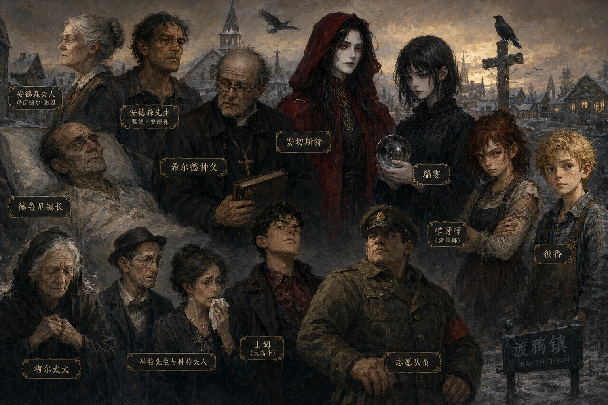

渡鸦镇的确是个很安静的地方，安静到你能听见苍蝇撞在教堂窗户上的声音。当然，那块窗户早就裂了，希尔德神父每次看到都像被打击了的革命家一般，嘟囔着说那是"信仰出现了伤口"，可没人去修，毕竟信仰当不了饭吃。

人物群像 · 图片由 GPT image2 生成 · 点击图片放大
故事始于安德森夫人的葬礼。这位曾在前线缝合伤口的军医，是渡鸦镇最后一块压舱石。她死后，小镇的秩序开始松动——酗酒的神父希尔德在布道中咳不出完整的悼词，商贩们盘算着被风吹走的卷心菜，年轻一代则惦记着秘密的约会。
在这个"信仰出现了伤口"的小镇上，三个少年各自以自己的方式对抗着沉闷的现实：瑞雯，一个来历不明的黑衣少女，她不觉得冷，也不理解眼泪；索菲娜（绰号"咿呀呀"），被镇上人贴上了"暴力怪胎"的标签，用尖锐的姿态保护自己；彼得，醉心于科学的少年，想造一艘船从那条漂着死鱼的河上驶离小镇。
随着一场反常的大雪降临，渡鸦镇被彻底封堵。而藏在小镇表面之下的秘密——关于战争、关于背叛、关于一个名叫安切斯特的男人，以及安德森夫人真正的名字玛丽德尔·诺因——开始像解冻的尸骸般逐一浮现。
"死亡对她而言更像是一种'情绪'。每当有人被那块厚重的木板盖上，大家就会如同自动唱片机一般开始嚎啕大哭与流泪。她仔细观察着每一张脸，试图找出那悲伤之下的开关。"
穿着纯黑连衣裙的神秘少女，被发现在教堂前的光影中。她对寒冷毫无知觉，对死亡的概念与常人迥异。她的出现似乎与小镇随后发生的异常有着某种关联。
外来者，被镇上孩子称为"怪胎"。从南北交界处的无名村庄来到渡鸦镇，在新学校第一天就因打架被孤立。她的野性之下藏着一段等待被救赎的过往。
医生的儿子，教师之子。在科学与信仰之间摇摆的少年，痴迷于纸飞机、显微镜和造船计划。他是三人中最接近"普通人"的存在，却在异常逼近时选择了直面。
渡鸦镇教堂的老神父，酗酒成性，嗓子干裂得像龟裂的土地。他缝补大衣的针脚像蜈蚣，主持葬礼时咳得像驴叫。但在粗粝的表象之下，他对瑞雯的照顾透露着某种笨拙的温柔。
故事的第一粒多米诺骨牌。曾在前线缝合士兵伤口的军医，德高望重的遗孀。她的死亡揭开了小镇表面之下的裂缝。第十一、十二章回溯了她的战时过往。
一个名字在故事前半段只出现在瑞雯的幻想和流言中——"河底埋了宝藏"。第九章中他现身与安德鲁镇长对峙，像"一团暗焰"。他是渡鸦镇秘而不宣的历史的化身。
悬停连线查看关系描述，点击角色节点查看详情。
点击左侧角色节点
查看详情
小说采用哥特式小镇叙事，语调冷峻、克制，在暗色幽默与诗意之间游走。叙述者像一个耐心的观察者，不动声色地记录着渡鸦镇的衰败：鱼翻了肚皮的河、裂了缝的教堂窗户、被风刮走的悼词、像"自动唱片机"一般准时响起的哭声。
在结构上，小说采用了双线叙事：前十二章的主体线索跟随瑞雯、索菲娜和彼得三个少年，以小镇日常的缓慢崩塌为节奏；最后两章将时间轴拉回过去，以诺因的战时经历为透镜，重新照亮此前所有伏笔——葬礼上的疏离、河底的秘密、大雪的异常、以及渡鸦镇本身为何是渡鸦镇。
三个少年各自代表了一种应对世界的方式：瑞雯是疏离（她不理解人类的情绪，像旁观者），索菲娜是反抗（用暴力对抗暴力的标签），彼得是理性（试图用科学解释一切异常）。三人的友谊构成了小说在灰暗底色上最温暖的一条线。
回答以下四个问题，看看你最像渡鸦镇的哪个角色。
| 章节 | 约字数 | |
|---|---|---|
| 1 | 盛大的葬礼与团结的断裂 | 2,042 |
| 2 | 酗酒的神父与神迹的涌现 | 3,589 |
| 3 | 孤僻的少女与神秘的访客（上） | 2,612 |
| 4 | 孤僻的少女与神秘的访客（下） | 3,402 |
| 5 | 外来的怪胎与救赎的灵魂（上） | 3,848 |
| 6 | 外来的怪胎与救赎的灵魂（下） | 3,427 |
| 7 | 科学的探索与异样的察觉 | 3,410 |
| 8 | 猩红的回归与危机的再现 | 3,287 |
| 9 | 交锋与平静 | 2,829 |
| 10 | 破晓与黎明 | 3,995 |
| 11 | 往日的硝烟（上） | 4,690 |
| 12 | 往日的硝烟（下） | 4,169 |